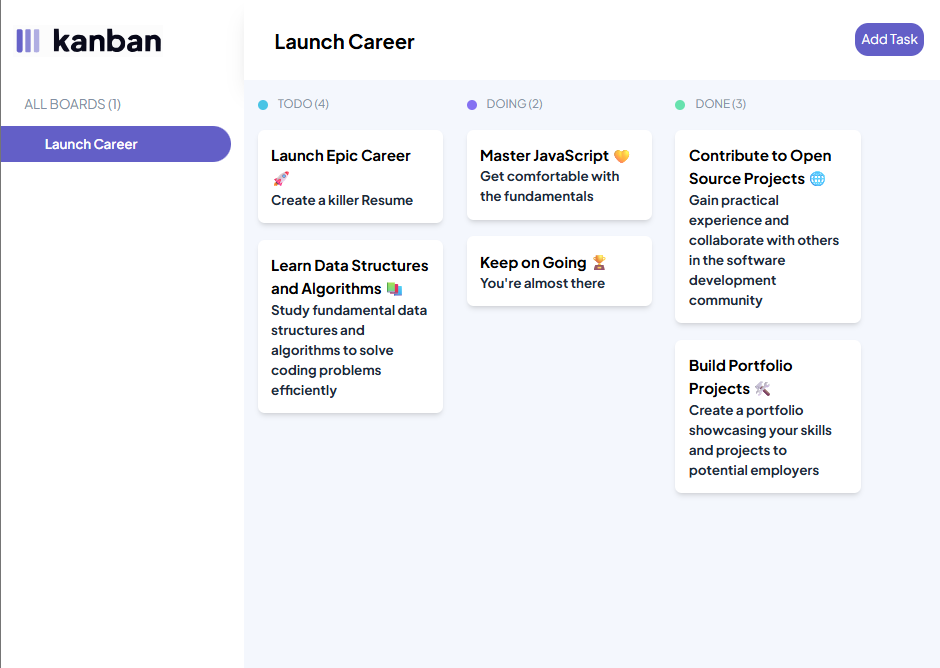

Kanban Task Board
A responsive web-based Kanban board designed to help users manage tasks visually across different stages of completion. Inspired by agile workflows, this tool allows users to create, move, and delete tasks in columns such as “To Do,” “In Progress,” and “Done.” It emphasizes clarity, drag-and-drop interaction, and productivity.
Technologies:
- HTML
- CSS / Tailwind
- JavaScript
- Local Storage View Project